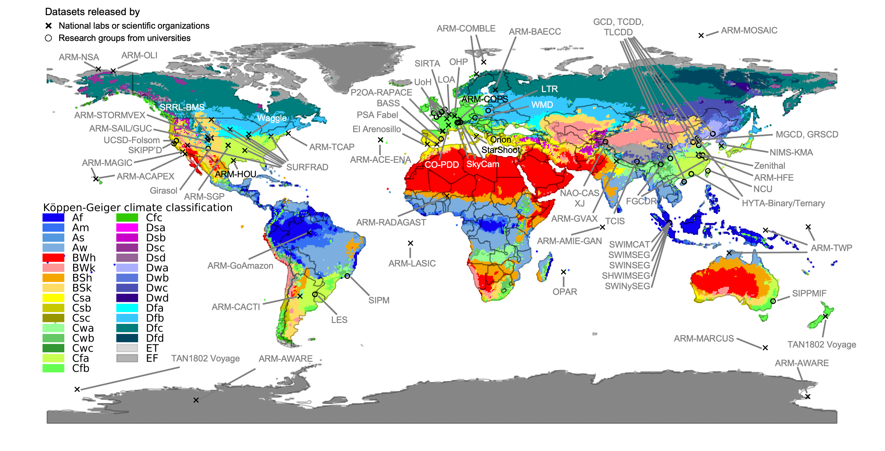
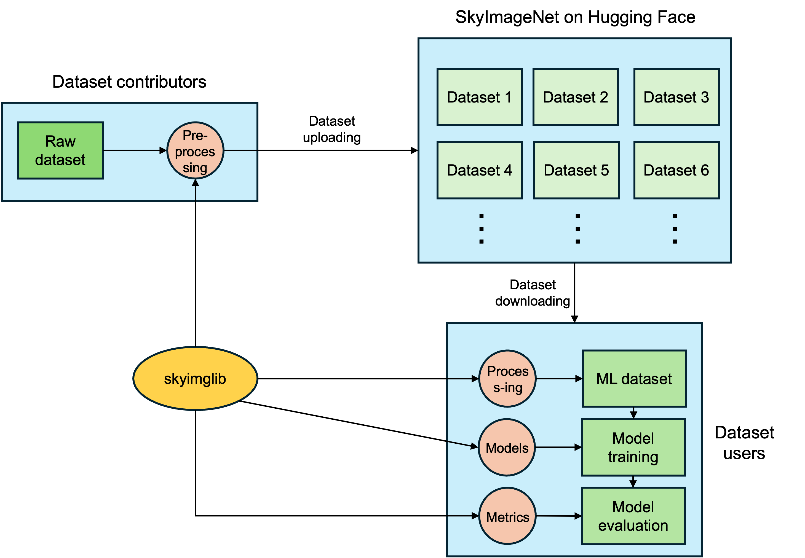

We aim at creating a one-stop shop for solar energy meteorology research, from data, software tools, to a foundation model.

Data
The SkyImageNet database covers years of sky and atmospheric observations from diverse climate zones around the globe.
Read More

Tool
The skyimglib Python library streamlines the access and utilization of sky imagery and atmospheric observations from SkyImageNet.
Foundation Model
The SkyVision foundation model is trained on terabytes of sky video footage in a self-supervised fashion and can be adapted to various downstream tasks.
Read More